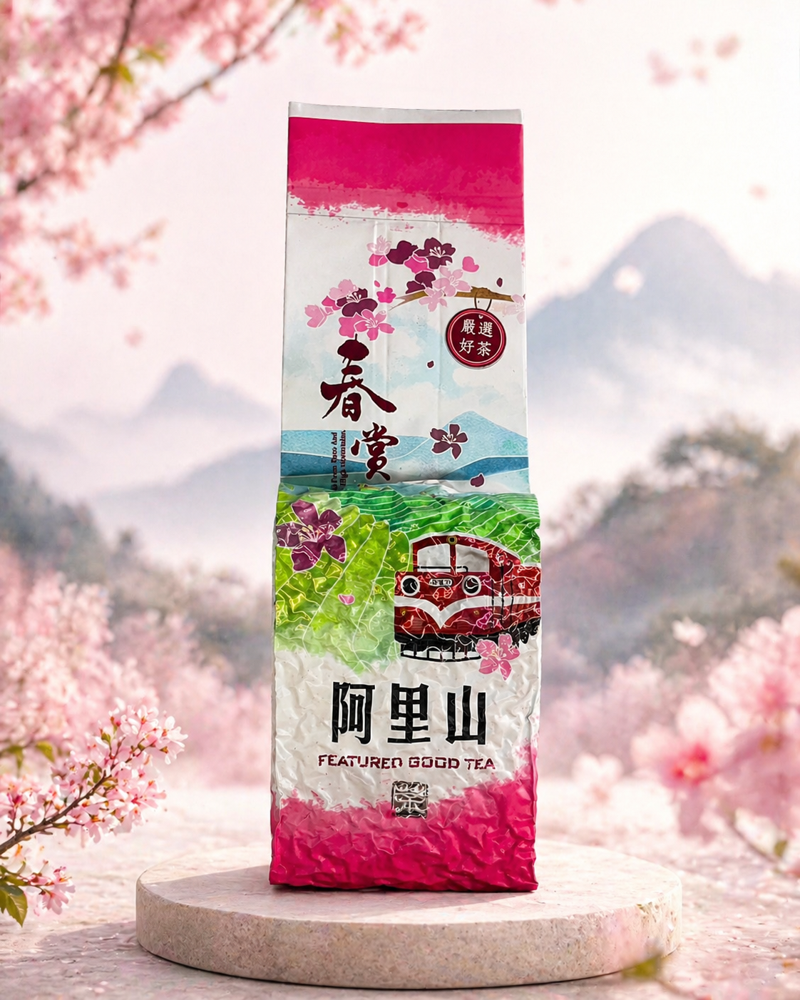
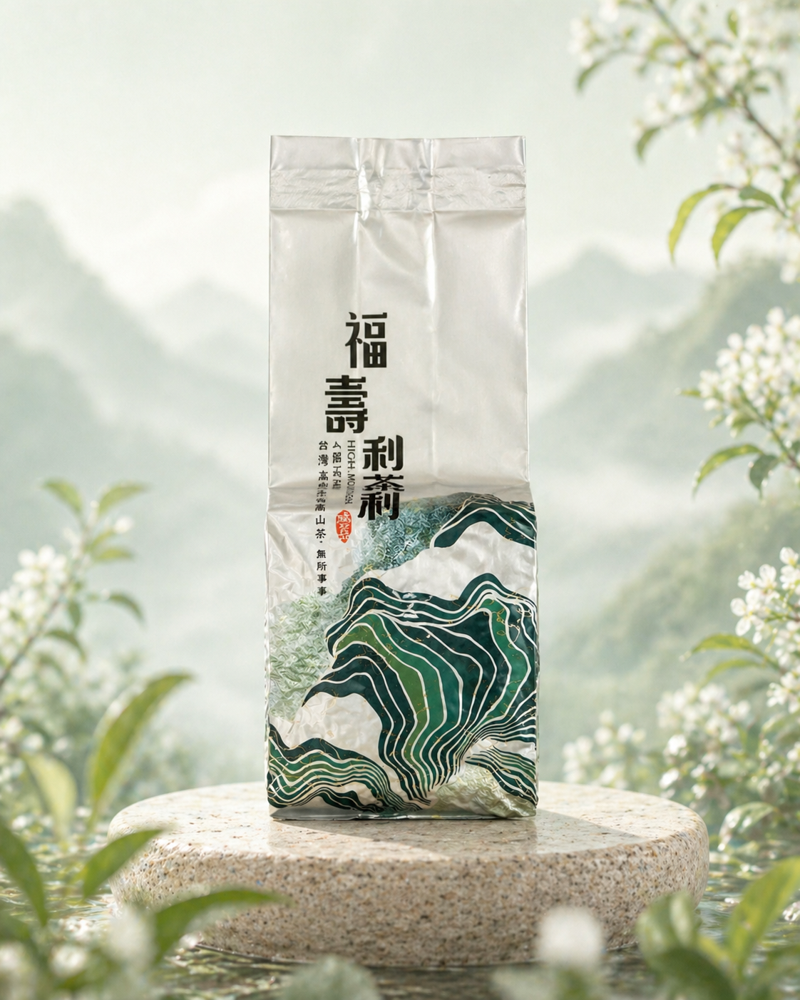
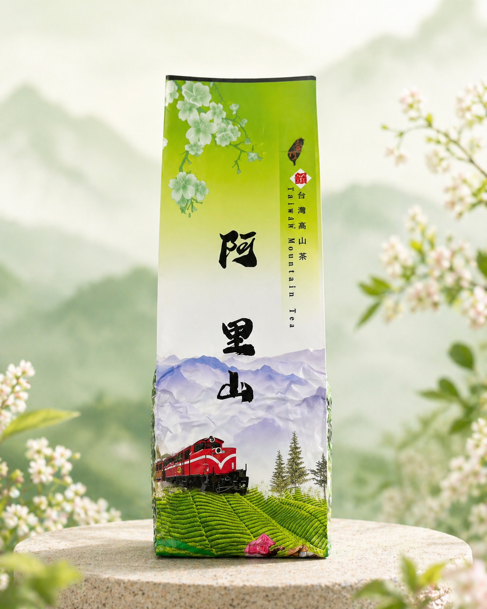
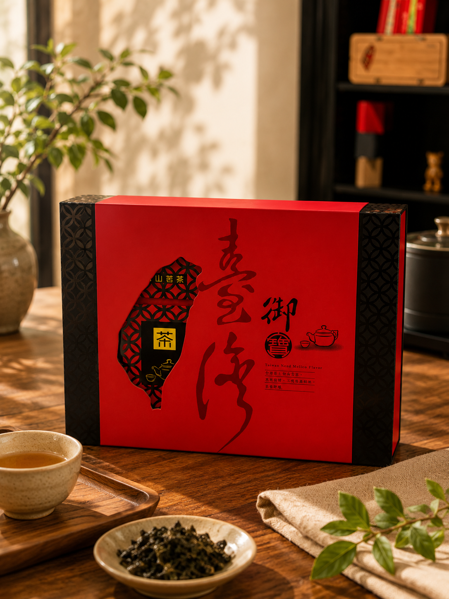
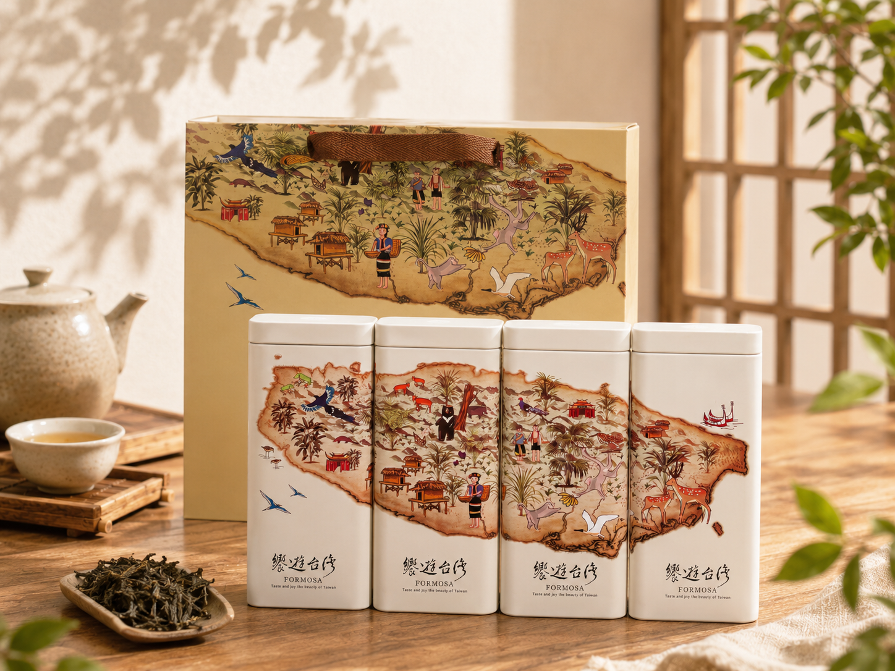
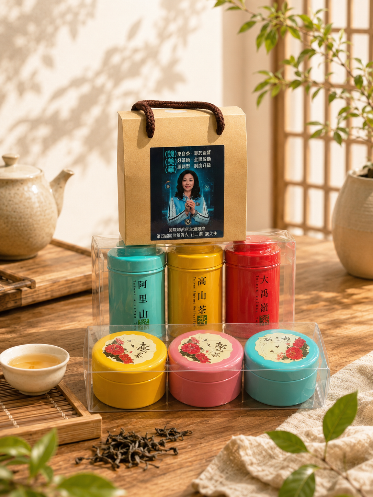

機採四季春
清新淡雅，四季皆宜的甘甜茶韻
選用優質四季春茶菁，以機械化採收技術確保品質穩定。茶湯清澈明亮，帶有自然花香與清甜滋味，入口柔順甘潤，尾韻清爽不澀，是最受歡迎的日常茶款之一。
風味特色
- 淡雅花香
- 茶感清爽
- 甘甜順口
- 適合冷泡與熱泡
適合對象
喜歡清爽茶感與日常飲用的消費者。

碧玉烏龍
清香花韻，甘醇回甘
嚴選高山茶菁製成，茶湯清澈透亮，入口帶有淡雅花香與自然甜韻。採輕發酵工藝保留茶葉原始風味，口感柔順不苦澀，適合日常品飲。
風味特色
- 清香花香
- 茶韻甘甜
- 無焙火製程
- 口感清爽順口
適合對象
喜愛清香型烏龍茶、追求自然茶韻的品茗者。

阿里山金萱
天然奶香，溫潤順口
來自阿里山高海拔茶區，金萱茶種特有的天然奶香與花香交織，茶湯滑順甘甜，入口圓潤細膩，展現高山茶獨特魅力。
風味特色
- 天然奶香
- 淡雅花香
- 茶質甘醇
- 餘韻悠長
適合對象
喜歡溫和茶感與奶香風味的茶友。

大禹嶺88 K
台灣高山茶王者之作
產自台灣最具代表性的高山茶區大禹嶺，茶園位於高海拔山區，生長環境嚴苛，產量珍稀。茶湯入口鮮甜細滑，帶有淡雅花香與獨特高山韻，香氣高揚且餘韻悠長，展現頂級茶品風範。
風味特色
- 頂級特等茶園
- 入口鮮甜滑順
- 淡雅花香
- 高山韻濃厚
適合對象
講究品質、收藏級與送禮需求的高端茶葉愛好者。

武陵農場
高冷茶區的蘭香經典
來自台灣著名高冷茶區武陵農場，日夜溫差大，使茶葉累積豐富芳香物質。茶湯甘甜圓潤，散發優雅蘭花香與高山韻味，入口滑順且層次豐富。
風味特色
- 海拔1800～2000公尺
- 清甜回甘
- 優雅蘭花香
- 茶韻細膩飽滿
適合對象
喜愛高山茶及蘭花香型茶款的品茗人士。

天池
雲霧高山孕育的極致甘甜
茶園位於海拔2500至2700公尺高山地區，終年雲霧繚繞，造就茶葉細嫩厚實。茶湯入口鮮甜柔潤，帶有高山茶獨特冷礦氣息與花果香韻，層次細膩且餘韻悠長。
風味特色
- 海拔2500～2700公尺
- 口感鮮甜細緻
- 高山冷礦韻
- 回甘持久
適合對象
追求頂級高山茶風味與收藏價值的茶友。

達邦烏龍
濃郁花香，醇厚茶韻
選自阿里山達邦地區優質茶園，擁有豐富花香與細緻奶油香氣。茶湯飽滿厚實，層次豐富，展現山區茶葉獨有的高雅氣息。
風味特色
- 花香濃郁
- 奶油香氣
- 茶湯厚實
- 層次豐富
適合對象
偏好香氣明顯、茶感厚實的品茗愛好者。

御寶禮盒
喜氣尊榮，典雅傳世
以充滿喜氣的經典東方紅為主色調，搭配名家書法題字與台灣意象的鏤空設計，隱約透出內斂的茶藝底蘊。華麗而不失穩重的外觀，完美彰顯送禮者的非凡品味與至高敬意。
禮盒特色
- 經典紅黑配色，展現大氣尊貴格局
- 精美窗花透視設計，包裝巧思獨具
- 名家書法視覺，蘊含深厚文化底蘊
- 嚴選頂級珍藏好茶，極致品味饗宴
推薦情境
逢年過節賀禮、長輩拜訪敬贈、企業年終感恩大宗採購。

饕遊台灣
拼圖式巧思，品味福爾摩沙之美
將台灣在地生態、原民文化與自然景致，細膩刻畫於純白茶罐之上。四罐並列即可拼湊出完整的台灣島嶼風情，專屬提袋亦延續此手繪插畫設計，讓您在品茗在地好茶的同時，彷彿也遊歷了一趟美麗的寶島。
禮盒特色
- 獨創四罐拼圖設計，完美呈現台灣意象
- 細緻溫暖的手繪插畫，融入在地特有生態
- 典雅純白霧面茶罐，質感細膩且防潮保鮮
- 嚴選台灣在地優質好茶，視覺與味蕾雙重饗宴
推薦情境
外賓商務贈禮、國際友人伴手禮、喜愛台灣在地文化之收藏者。

竹紋台灣
溫潤竹韻，在地匠心
結合天然竹材與精緻工藝，盒身刻劃出獨特的台灣島嶼意象，展現濃厚的在地風情與質樸美學。這不僅是一份蘊含台灣高山好茶的禮物，更是一份傳遞溫暖與品味的質樸心意。
禮盒特色
- 天然竹木材質，手感溫潤雅致
- 專屬台灣輪廓設計，極具紀念意義
- 皮質提把設計，俐落且方便攜帶
- 內含嚴選特級茶款，可依需求搭配
推薦情境
國際外賓贈禮、企業 VIP 客戶餽贈、質感生活追求者。

專屬客製化茶禮
量身打造，傳遞專屬心意
提供多樣化的茶款與包裝自由搭配。無論企業採購或個人紀念，我們都能將您的專屬視覺完美融入，打造獨一無二的茶香禮遇。
客製服務特色
- 多款茶罐與外盒自由選搭
- 客製化專屬Logo與提袋
- 嚴選台灣好茶，靈活組合
- 專屬顧問全程協助規劃
適合對象
企業採購、活動公關、婚禮小物與品牌聯名。